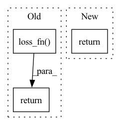

Pattern ID :30787

Before Change
log_probs = nn.functional.log_softmax(logits, dim=-1)
log_probs_len = logits_len
fixed_text_len = torch.minimum(logits_len, text_len) // For broken short audio clips
return self.loss_fn(log_probs, text, log_probs_len, fixed_text_len)
def training_step(self, batch, batch_idx):
loss = self._calc_batch_loss(batch)
self.log("train_loss", loss)
After Change
// logits: [audio_len, batch_size, vocab_size]
log_probs = nn.functional.log_softmax(logits, dim=-1)
log_probs_len = logits_len
return self.criterion(log_probs, text, log_probs_len, text_len)
def training_step(self, batch, batch_idx):
loss = self._calc_batch_loss(batch)
In pattern: SUPERPATTERN
Frequency: 4
Non-data size: 3
Instances
Fragment ID: 90709692
Project Name: kaiidams/voice100
Commit Name: 4b253e066e8218c0f383a13af6d203910131ba30
Time: 2022-12-31
Author: katsuya.iida@gmail.com
File Name: voice100/models/asr.py
M Class Name: AudioToCharCTC
N Class Name: AudioToCharCTC
M Method Name: _calc_batch_loss(2)
N Method Name: _calc_batch_loss(2)
M Parent Class: pl.LightningModule
N Parent Class: pl.LightningModule
M File Name: voice100/models/asr.py
N File Name: voice100/models/asr.py
M Start Line: 145
M End Line: 152
N Start Line: 150
N End Line: 152
'>
Before Change
model_out = self.model(x, t, x_self_cond)
target = x_start
loss = self.loss_fn(model_out, target)
return loss
def forward(self, img, *args, **kwargs):
b, c, h, w, device, img_size, = *img.shape, img.device, self.image_size
After Change
// predict and take gradient step
pred_x_start = self.model(x, log_snr, x_self_cond)
return F.mse_loss(pred_x_start, x_start)
def forward(self, img, *args, **kwargs):
b, c, h, w, device, img_size, = *img.shape, img.device, self.image_size
'>
Fragment ID: 90709693
Project Name: lucidrains/bit-diffusion
Commit Name: 7b25c9d18c4aa4200c7df429ffa7815641f67021
Time: 2022-08-17
Author: lucidrains@gmail.com
File Name: bit_diffusion/bit_diffusion.py
M Class Name: BitDiffusion
N Class Name: BitDiffusion
M Method Name: p_losses(4)
N Method Name: p_losses(4)
M Parent Class: nn.Module
N Parent Class: nn.Module
M File Name: bit_diffusion/bit_diffusion.py
N File Name: bit_diffusion/bit_diffusion.py
M Start Line: 579
M End Line: 596
N Start Line: 599
N End Line: 613
'>
Before Change
return logits
logits = rearrange(logits, "b n c -> b c n")
return self.loss_fn(logits, labels)
After Change
logits = rearrange(logits, "b n c -> b c n")
loss = cross_entropy_fn(logits, labels, ignore_index = 0, use_triton = use_triton)
return loss
'>
Fragment ID: 90709694
Project Name: lucidrains/triton-transformer
Commit Name: 1eaad05dc0d3b174bf378361d89a650005695da5
Time: 2021-09-21
Author: lucidrains@gmail.com
File Name: triton_transformer/triton_transformer.py
M Class Name: Transformer
N Class Name: Transformer
M Method Name: forward(3)
N Method Name: forward(3)
M Parent Class: nn.Module
N Parent Class: nn.Module
M File Name: triton_transformer/triton_transformer.py
N File Name: triton_transformer/triton_transformer.py
M Start Line: 324
M End Line: 325
N Start Line: 328
N End Line: 331
'>
Before Change
// logits: [audio_len, batch_size, vocab_size]
log_probs = nn.functional.log_softmax(logits, dim=-1)
log_probs_len = logits_len
return self.loss_fn(log_probs, text, log_probs_len, text_len)
def training_step(self, batch, batch_idx):
loss = self._calc_batch_loss(batch)
self.log("train_loss", loss)
After Change
log_probs = nn.functional.log_softmax(logits, dim=-1)
log_probs_len = logits_len
fixed_text_len = torch.minimum(logits_len, text_len.cpu()) // For very short audio
return self.criterion(log_probs, text, log_probs_len, fixed_text_len)
def training_step(self, batch, batch_idx):
loss = self._calc_batch_loss(batch)
'>
Fragment ID: 90709695
Project Name: kaiidams/voice100
Commit Name: 9a08bfb8fa83abab940d4ded6e248245e872db43
Time: 2022-12-30
Author: katsuya.iida@gmail.com
File Name: voice100/models/align.py
M Class Name: AudioAlignCTC
N Class Name: AudioAlignCTC
M Method Name: _calc_batch_loss(2)
N Method Name: _calc_batch_loss(2)
M Parent Class: pl.LightningModule
N Parent Class: pl.LightningModule
M File Name: voice100/models/align.py
N File Name: voice100/models/align.py
M Start Line: 103
M End Line: 105
N Start Line: 104
N End Line: 107